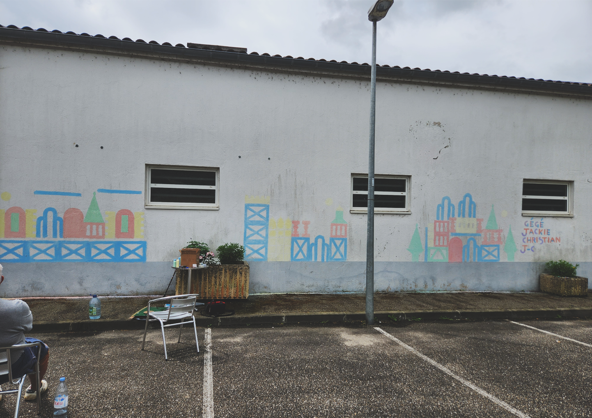
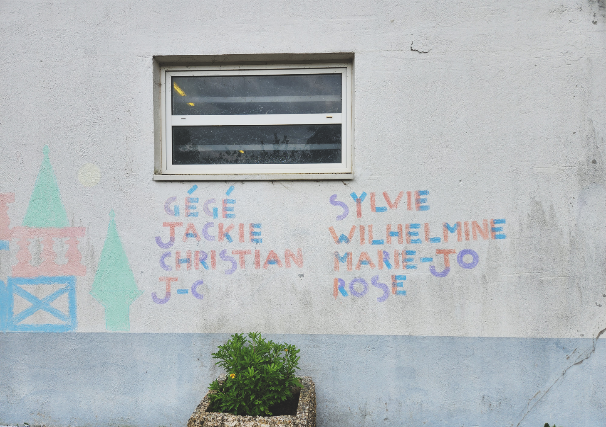
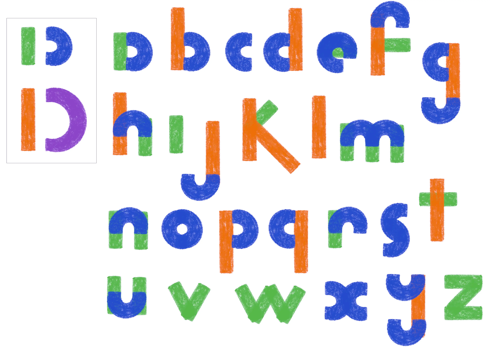
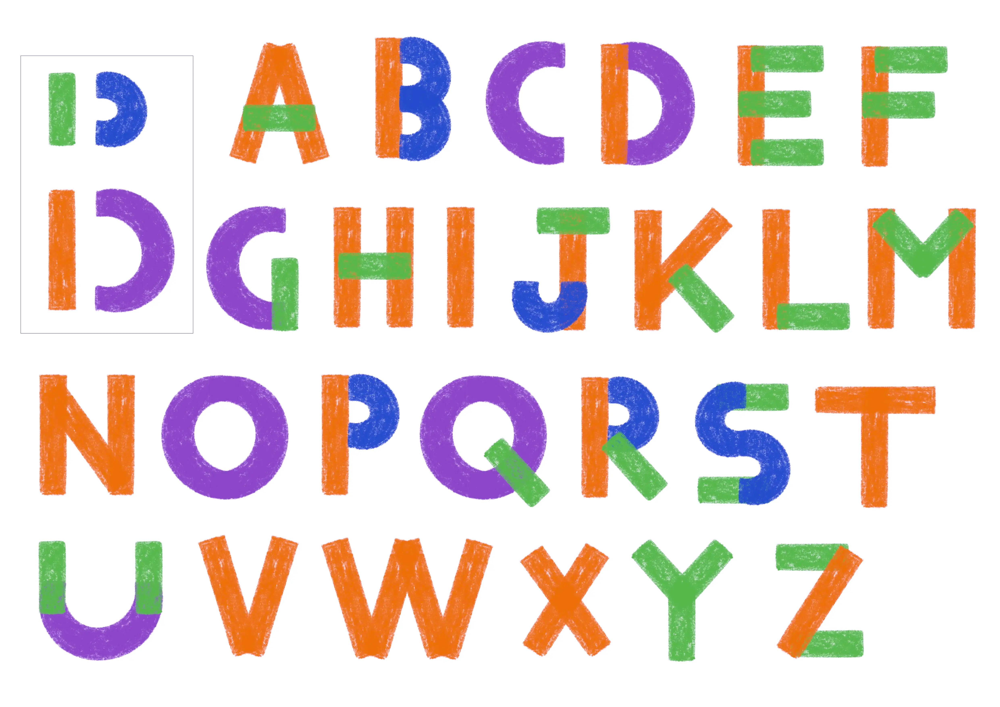
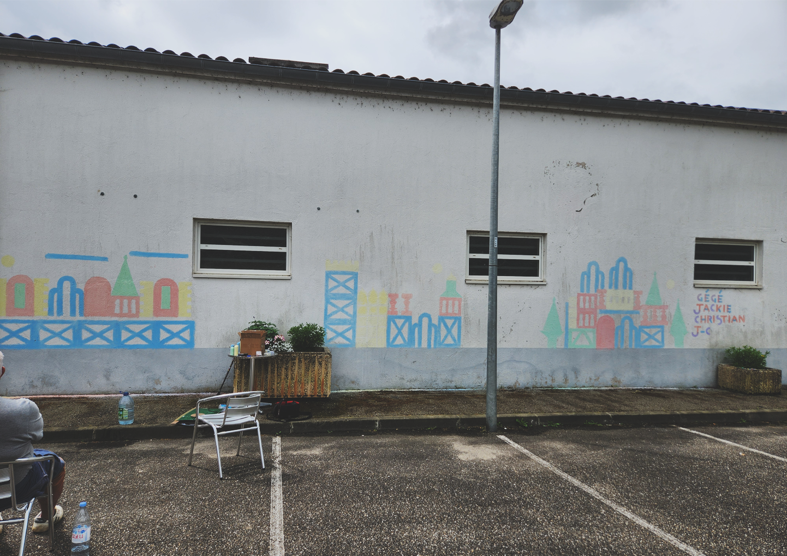
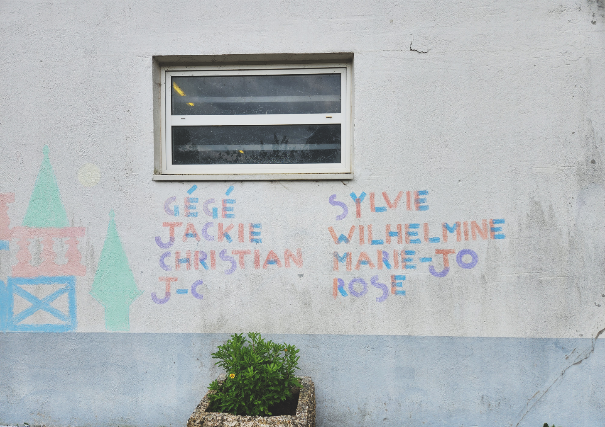
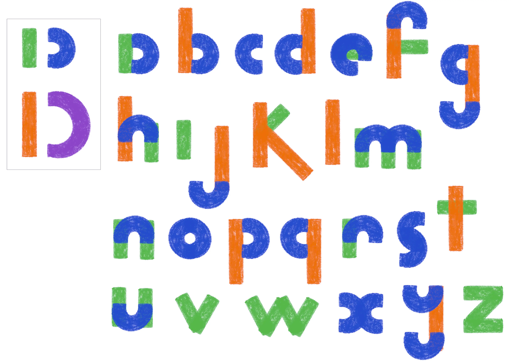
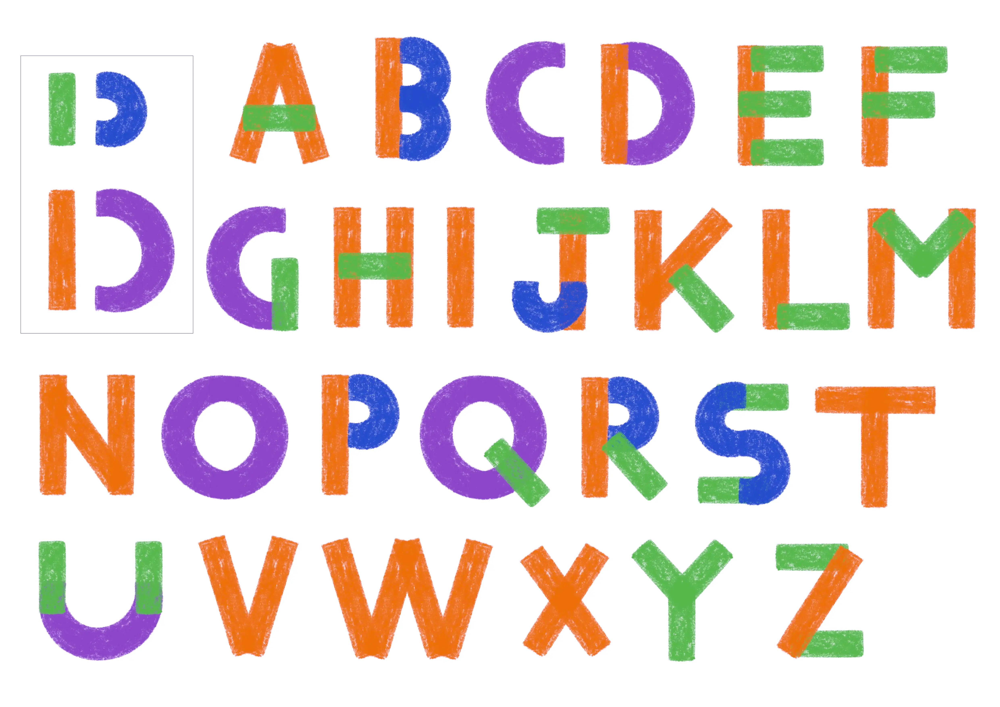

Fresque avec l'Essor
de Castelmoron-sur-Lot
Cette fresque prolonge les réflexions développées dans mon mémoire, Au plus près, l’immersion comme protocole d’intervention. Elle traduit graphiquement une volonté : rendre visible une présence, créer du lien entre un lieu de vie et son environnement social, entre les habitants de Castelmoron, et les résidents de l'Essor.
Pensée avec les résidents du foyer, la fresque s’appuie sur des modules inspirés de l’architecture locale. D'abord à échelle réduite, chaque participant a imaginé ou réinterprété un lieu réel ou fictif, à l'aide des modules. Un jeu formel simple, accessible, mais suffisamment souple pour accueillir des récits. Sur 4 demi-journées, nous sommes ensuite venus reproduire quelques compositions à taille réelle, à la craie, sur un mur du village prêté par la mairie.
Ce projet a permis aux résidents de prendre part à un processus de création graphique collectif, visible dans l’espace public. La fresque devient ainsi un support d’expression, mais aussi un geste de médiation silencieux : elle invite à porter un autre regard sur le foyer, ses habitants, et les relations possibles entre dedans et dehors.
 






